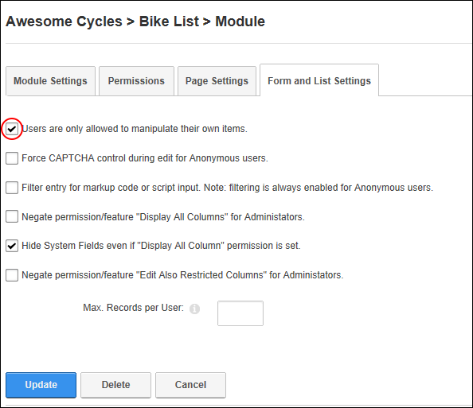

Enabling/Disabling Users to Only Manage Their Own Records
How to limit users to only managing their own records in lists on the Forms and Lists module.
-
- Select the Form and List Settings tab.
- At Users are only allowed to manipulate their own items, select from these options:
- if users can only manipulate their own items.
- to allow users to manipulate all items as set under permission. See "Setting Form Permissions" and See "Setting List Permissions"

Users can only modifying their own list records